F1 75 aniversario - Historia y temporada actual.
Ira imagen
Historia
Texto introductorio sobre los 75 años de la formula one.
Evolucion de los coches de la formula 1


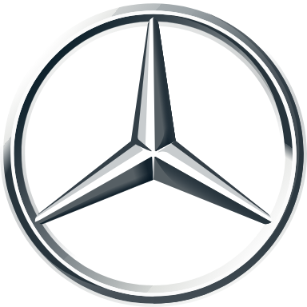


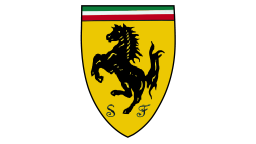


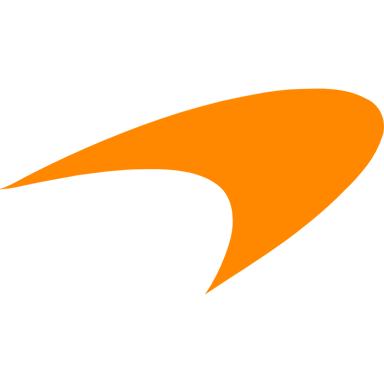

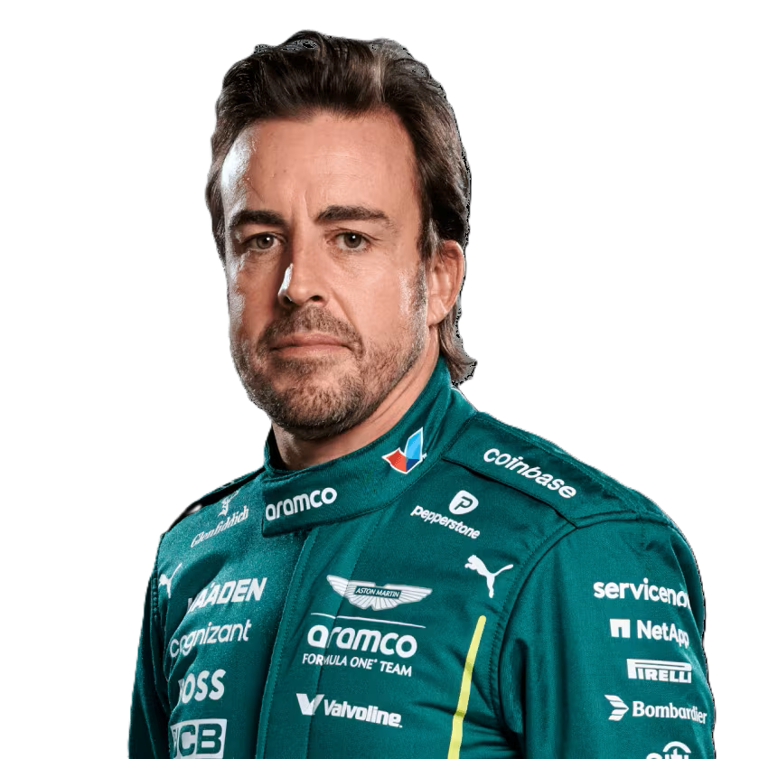


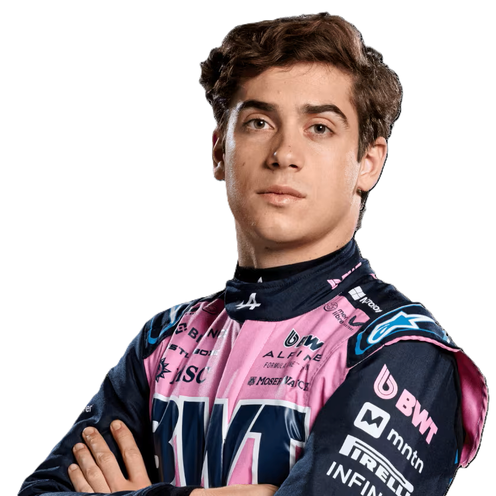
2025 DRIVER LINE-UP

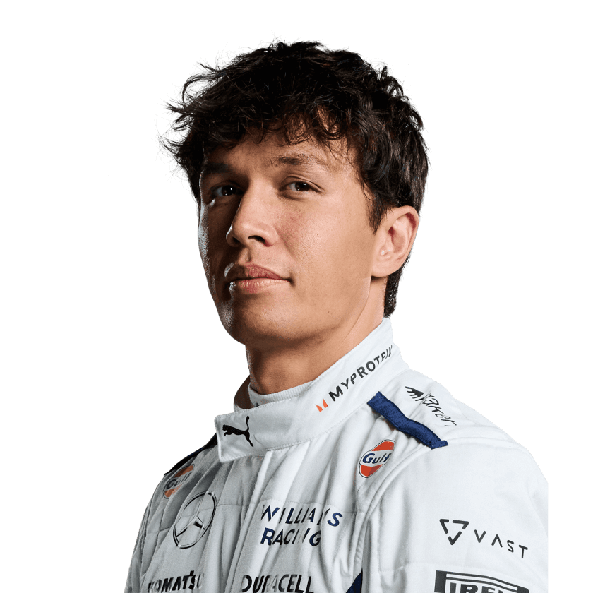
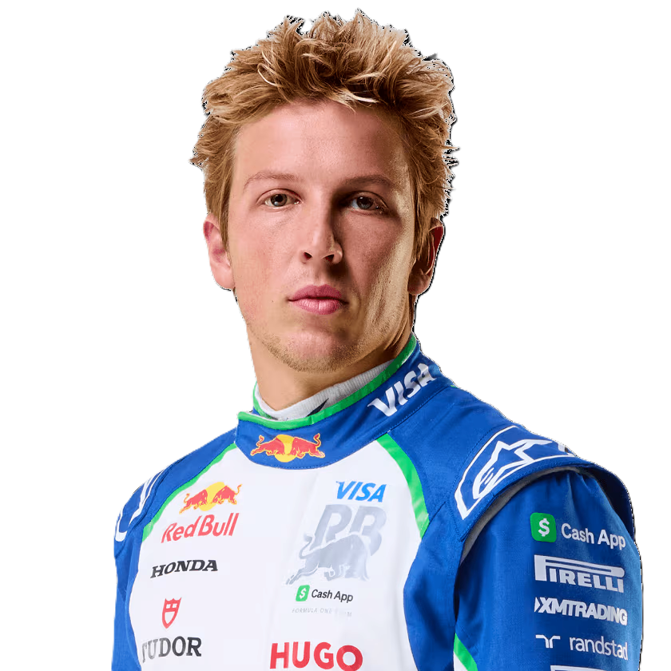
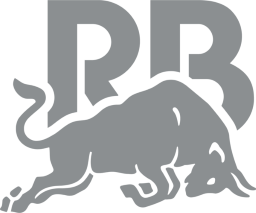


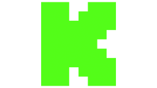

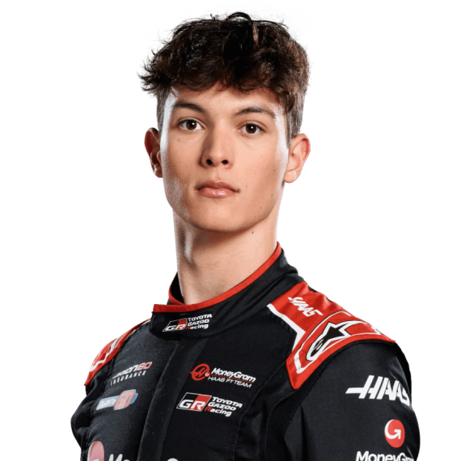
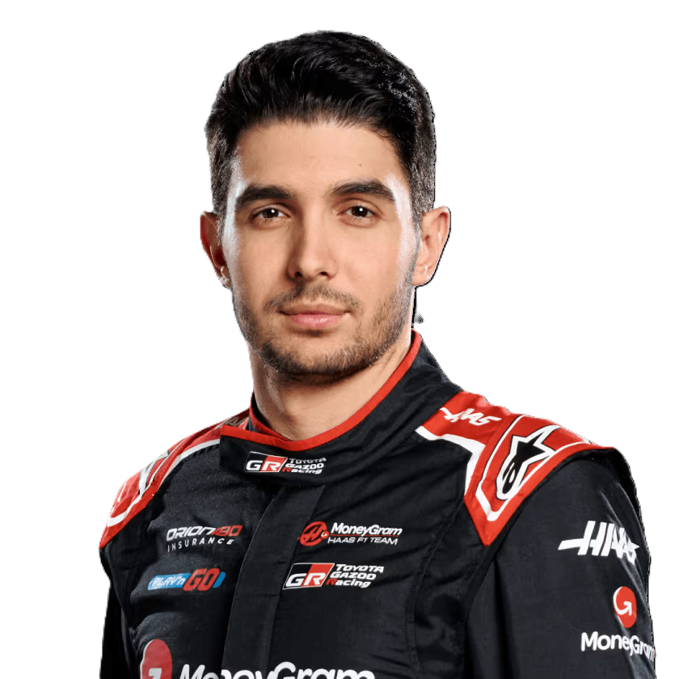
Mclaren F1 team
Información General de la escuderia:
| Nombre de la escuderia: | Mclaren Forumala 1 Team | |
|---|---|---|
| Nacionalidad | Britanica | |
| Año de debut en la F1 | 1966 | |
| Temporadas en F1 | 59 | |
| Campeonatos de constructores ganados | 10 | 1974, 1984 I 1985, 1988-1991, 1998, 2024 i 2025 |
| Titulos de pilotos: | 12 | Emerson Fittipaldi (1 - 1974), James Hunt (1 - 1976), Niki Lauda (1 - 1984), Alain Prost (3 - 1985,1986,1989), Ayrton Senna (3 - 1988,1990,1991), Mika Häkkinen (2 - 1998,1999), Lewis Hamilton (1 - 2008). |
Directiva de mclaren
| Jede de Escuderia | CEO | |
|---|---|---|
| Nombre | Andrea Stella | Zack Brown |
| Nacionalidad | Italiana | Estadounidense |
| Edad | 54 | 53 |
| Temporadas en F1 | 25 | 9 |
| Temporadas como jefe | 3(2023-actualment) | 7(2018-actualitat) |
| Titulos Totales | 5(3 com ingenier a Ferrari i 2 a Mclaren) | 2 |
| Titulos como jefe | 2 | 2 |
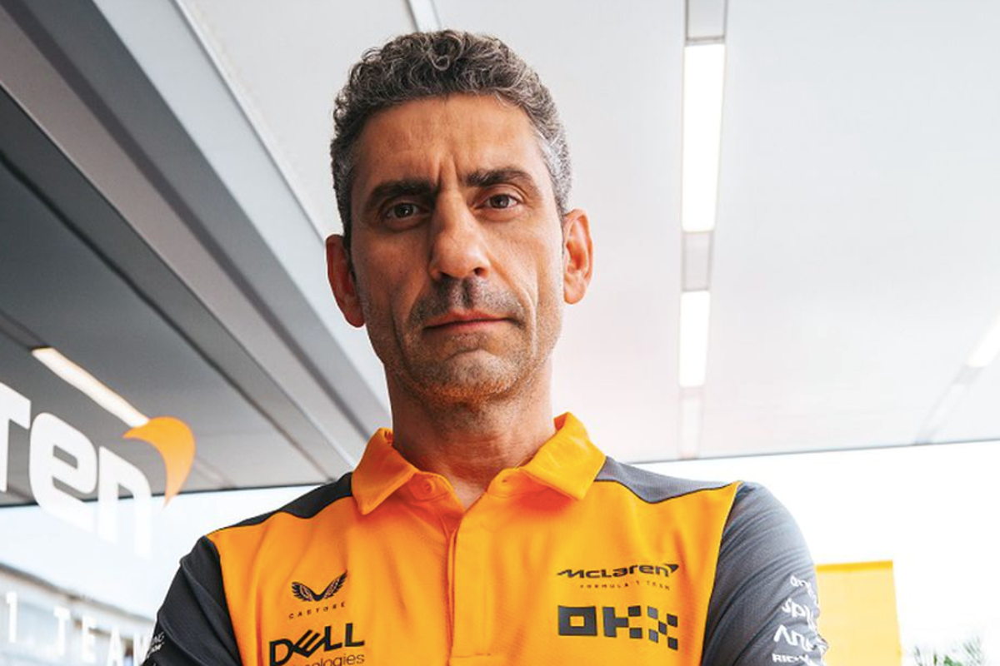
Andrea Stella

Zack brown

Oracle Red Bull Racing

Información General de la escuderia:
| Nombre de la escuderia: | Oracle Red Bull Racing | |
|---|---|---|
| Nacionalidad | Britanica (amb llicencia austriaca) | |
| Año de debut en la F1 | 2005 (Com Red Bull Racing) | |
| Equipos Anteriores | Jaguar Racing(200 fins 2004) | |
| Temporadas en la F1: | 21 | |
| Campeonatos de constructores ganados | 7 | 2010-2013 I 2021-2023 |
| Titulos de pilotos: | 8 | Sebasitan Vettel (4 - 2010,2011,2012,2013), Max Verstappen (4 - 2021,2022,2023,2024 i esta barallant-se per el de 2025) |
Directiva de Red Bull
| Jefe de Escuderia i ceo de Red Bull Racing | CEO del grup Red Bull GmbH | |
|---|---|---|
| Nombre | Cristhian Horner | Oliver Mintzalaff |
| Nacionalidad: | Britanica | Aelmana |
| Edad: | 51 | 49 |
| Temporadas en F1: | 20 | 2 |
| Temporadas como jefe: | 21 desde (2005) | 2 (2023 ) |
| Titulos Totales: | 13 | 2 |
| Titulos como jefe: | 13 | 2 |
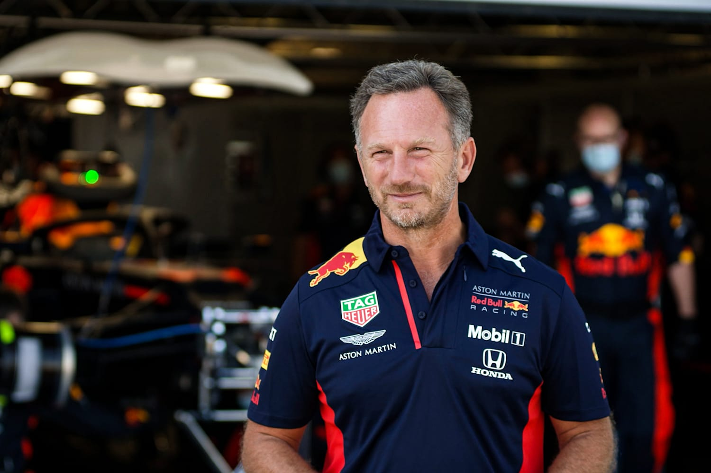
Cristhian Horner

oliver Mintzalaff
Coche mas iconico y Coche actual
Coche Temporada 2025

| Nombre del coche: | RB21 |
|---|---|
| Fabricante motor: | Honda |
| Motor | Red Bull Powertrains - Honda |
Coche mas iconico de la escuderia

| Modelo: | RB7 |
|---|---|
| Temporada | 2011 |
| Piloto Estrella | Sebastian Vettel |
| Motor: | Renault RS27-2011 |
Scuderia Ferrari
Información General de la escuderia:
| Nombre de la escuderia: | Scuderia Ferrari | |
|---|---|---|
| Nacionalidad | Italiana | |
| Año de debut en la F1 | 1950 | |
| Equipos Anteriores | Fundada directament | |
| Temporadas en la F1: | 75 (totes les temporades) | |
| Campeonatos de constructores ganados | 16 | 1961, 1964,1975-1977,1979, 1982 I 1983,1999,2001-2004,2007 I 2008 |
| Titulos de pilotos: | Total 15 | Giuseppe Farina (1 - 1950), Alberto Ascari (2 - 1952,1953), Juan Manuel Fangio (1 - 1956), Mike Hawthorn (1 - 1958), John Surtuees (1 - 1964), Niki Lauda (2 - 1975,1977),Jody Scheckter (1 - 1979), Michael Schumacher (5 - 2000,2001,2002,2003,2004,), Kimi Räikkönen (1 - 2007). |
Directiva de Ferrari
| Jefe de Escuderia | CEO | |
|---|---|---|
| Nombre | Fréderic Vasseur | Benedetto Vigna |
| Nacionalidad: | Francesa | Italiana |
| Edad: | 56 | 55 |
| Temporadas en F1: | 9 | 4 |
| Temporadas como jefe: | 3 (desde 2023) | 4 (desde 2021) |
| Titulos Totales: | 1 | 0 |
| Titulos como jefe: | 0 | 0 |

Fréderic Vasseur
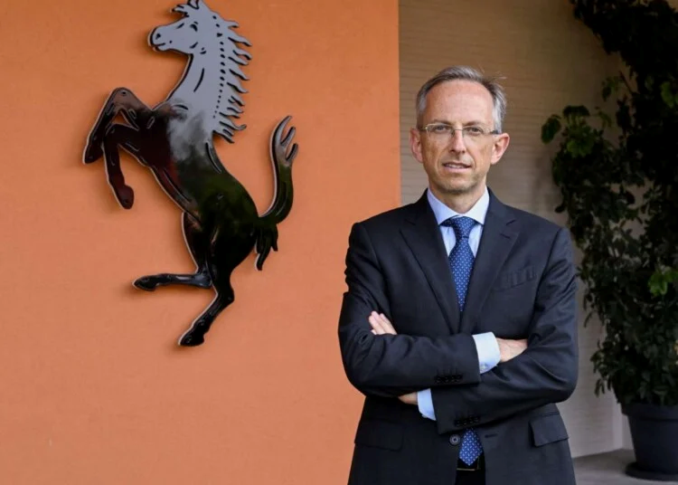
Benedetto Vigna

Aston Martin Formula One Team
Información General de la escuderia:
| Nombre de la escuderia: | Aston Martin Armarco Formula One Team |
|---|---|
| Nacionalidad | Britanica |
| Año de debut en la F1 | 1959 (Com constructor) /Com escuderia (2021) |
| Equipos Anteriores | Jordan,Midland,Spyker,Force India,Racing Point,Aston Martin |
| Temporadas en la F1: | 34 (Suman tota la historia) |
| Campeonatos de constructores ganados | 0 |
| Titulos de pilotos: | 0 |
Directiva de Aston Martin
| Jefe de Escuderia | CEO | |
|---|---|---|
| Nombre | Mike Krack | Lawrance Stroll (Pare de Lance Stroll) |
| Nacionalidad: | Luxemburguesa | Cnadiense |
| Edad: | 52 | 56 |
| Temporadas en F1: | 5 | 6 |
| Temporadas como jefe: | 3 | 6 |
| Titulos Totales: | 0 | 0 |
| Titulos como jefe: | 0 | 0 |
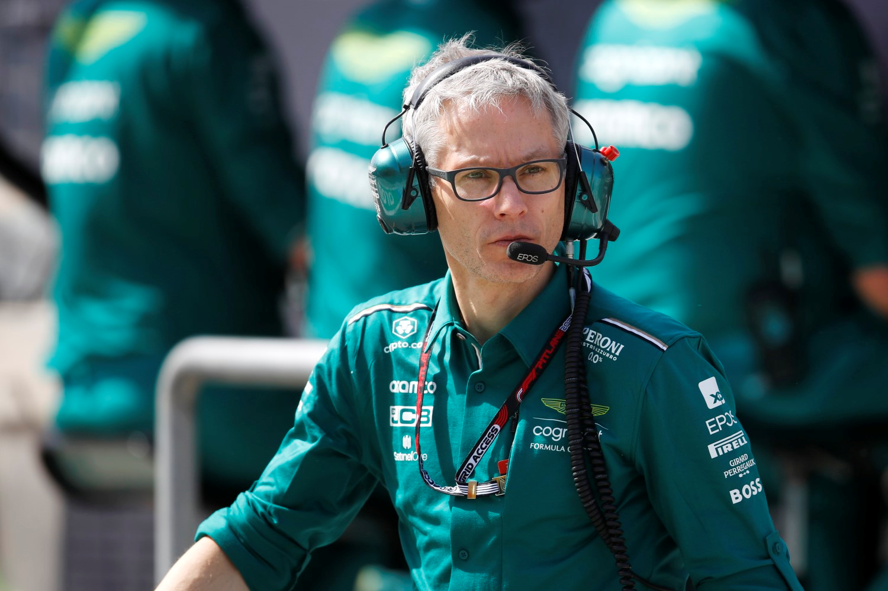
Mike Krack
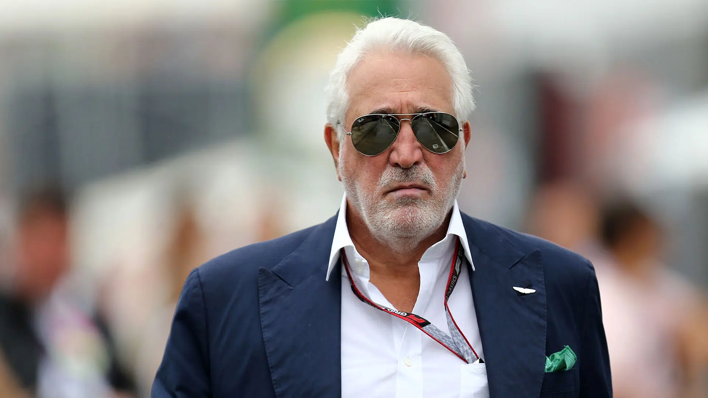
Lawrance Stroll


Mercedes AMG Petronas Forumula One Team
Información General de la escuderia:
| Nombre de la escuderia: | Mercedes AMG Petronas Forumula One Team | |
|---|---|---|
| Nacionalidad | Alemana | |
| Año de debut en la F1 | 1954 (Com Mercedes-Benz) | |
| Equipos Anteriores | Reapareix a 2010 | |
| Temporadas en la F1: | 28 | |
| Campeonatos de constructores ganados | 8 (2014,2015,2016,2017,2018,2019,2020,2021) | |
| Titulos de pilotos: | 8 | Juan Manuel Fangio (1 - 1954),Lewis Hamilton (6 - 2014,2015,2017,2018,2019,2020) Nico Rosberg (1 - 2016). |
Directiva de Mercedes
| Jefe de Escuderia | CEO | |
|---|---|---|
| Nombre | Totot Wolf | Ola Källenius |
| Nacionalidad: | Austriaca | Sueca |
| Edad: | 53 | 55 |
| Temporadas en F1: | 14 | 6 |
| Temporadas como jefe: | 12(2013-actualment) | 6(2017-actualment) |
| Titulos Totales: | 16 | 8 |
| Titulos como jefe: | 8 | 8 |
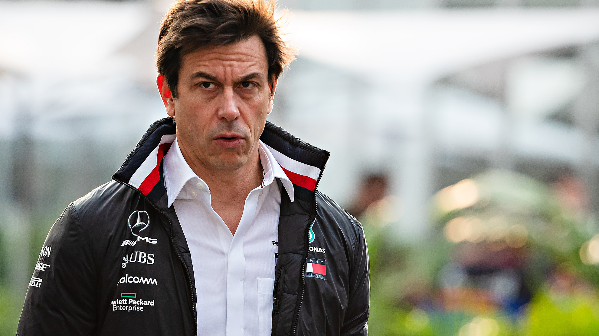
Toto Wolf

Ola Källenius


Williams Racing
Información General de la escuderia:
| Nombre de la escuderia: | Williams Racing (ara es Atlassian Willams Racing) | |
|---|---|---|
| Nacionalidad | Britanica | |
| Año de debut en la F1 | 1977 | |
| Fundada per: | Frank Williams i Patrick Head | |
| Equipos Anteriores: | Willams(1977-1999), BMW Williams F1 Team (2000-2005), Williams (2006-Actualitat). | |
| Temporadas en la F1: | 48 | |
| Campeonatos de constructores ganados | 9 | 1980-1981, 1986-1987, 1992-1994 , 1996-1997 |
| Titulos de pilotos: | 7 | Alan Jones (1 - 1980), Keke Rosberg (1 - 1982), Nelson Piquet (1 - 1987), Niguel Mansel (1 - 1992), Alain Prost (1 - 1993), Damon Hill (1 - 1996), Jacques Villeneuve (1 - 1997). |
Directiva de Williams
| Jefe de Escuderia | CEO | |
|---|---|---|
| Nombre | James Vowles | Matthew Savage |
| Nacionalidad: | Britanica | Estadounidens |
| Edad: | 44 | 49 |
| Temporadas en F1: | 15 | 3 |
| Temporadas como jefe: | 3 | 3 |
| Titulos Totales: | 9 | 0 |
| Titulos como jefe: | 0 | 0 |

James Vowles
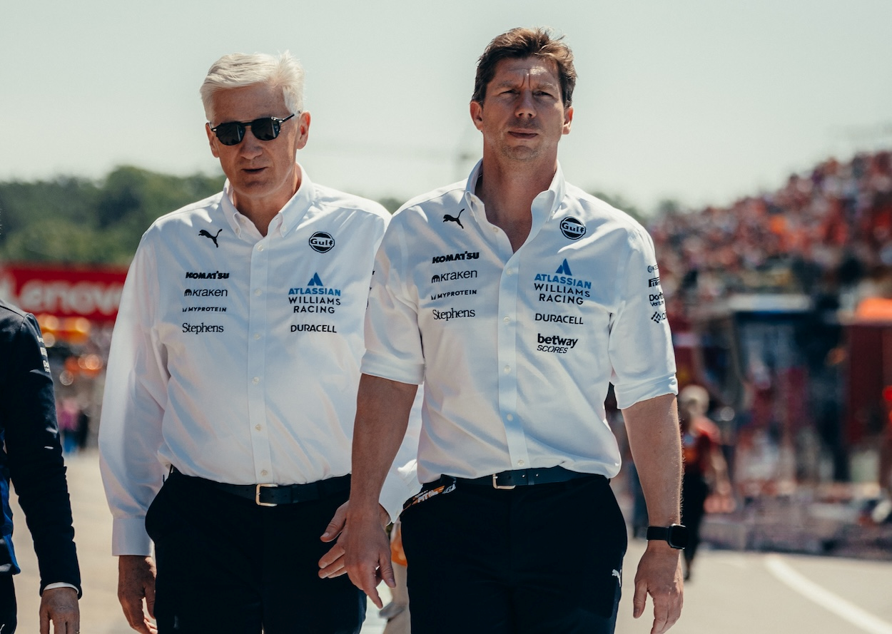
Matthew Savage


BWT Alpine F1 Team
Información General de la escuderia:
| Nombre de la escuderia: | BWT Alpine F1 Team | |
|---|---|---|
| Nacionalidad | Francesa | |
| Año de debut en la F1 | 1977 | |
| Equipos Anteriores | Renault (1977-2010), Lotus Renault GP(2011-2015), Renault (2016-2020), Alpine (2021-actualitat). | |
| Temporadas en la F1: | 47 | |
| Campeonatos de constructores ganados | 2 (2005-2006) | |
| Titulos de pilotos: | 2 | Fernando Alonso (2 - 2005,2006). |
Directiva de Alpine
| Jefe de Escuderia | CEO | |
|---|---|---|
| Nombre | Bruno Famini | Philippe Krief |
| Nacionalidad: | Francesa | Francesa |
| Edad. | 62 | 62 |
| Temporadas en F1: | 6 | 3 |
| Temporadas como jefe: | 2 | 2 |
| Titulos Totales: | 2 (Com ingienier en Peugot Sport) | 0 |
| Titulos como jefe: | 0 | 0 |
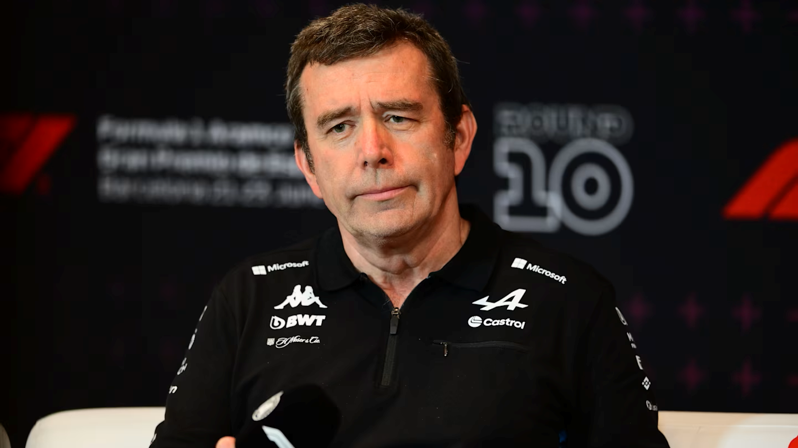
Bruno Famini
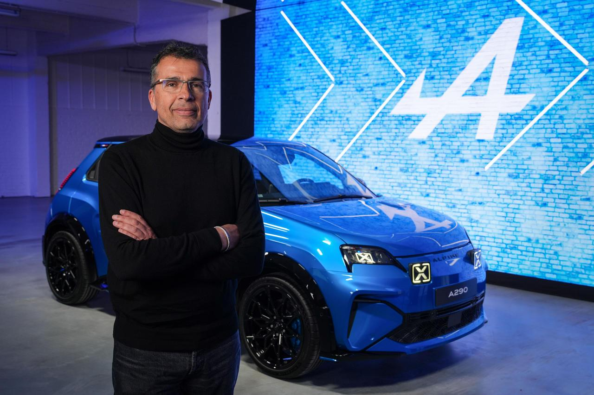
Philippe Krief
Coche mas iconico y Coche actual
Coche Temporada 2025


| Nombre del coche: | A525 |
|---|---|
| Fabricante motor: | Renault |
| Motor | Renault E-Tech RE25 |
Coche mas iconico de la escuderia

| Modelo: | Renault R26 |
|---|---|
| Temporada | 2006 |
| Piloto Estrella | Fernando Alonso |
| Motor: | Renault RS26 V8 |
Visa Cash APP RB Formula One Team
Información General de la escuderia:
| Nombre de la escuderia: | Visa Cash APP RB Formula One Team |
|---|---|
| Nacionalidad | Italiana |
| Año de debut en la F1 | 1985 |
| Equipos Anteriores | Mirandi(1985-2005), Toro Roso(Red Bull junior team, 2006-2019), Alpha Tauri (2020-2023), Racing Bulls (2023-actualment) |
| Temporadas en la F1: | 41 |
| Campeonatos de constructores ganados | 0 |
| Titulos de pilotos: | 0 |
Directiva de Racing Bulls
| Jefe de Escuderia | CEO | |
|---|---|---|
| Nombre | Laurent Meckies | Peter Bayer |
| Nacionalidad: | Francesa | Austriaca |
| Edad. | 47 | 52 |
| Temporadas en F1: | 20(desde Mirandi) | 4 |
| Temporadas como jefe: | 2 | 2 |
| Titulos Totales: | Multiples victories a ferrari com director | 0 |
| Titulos como jefe: | 0 | 0 |
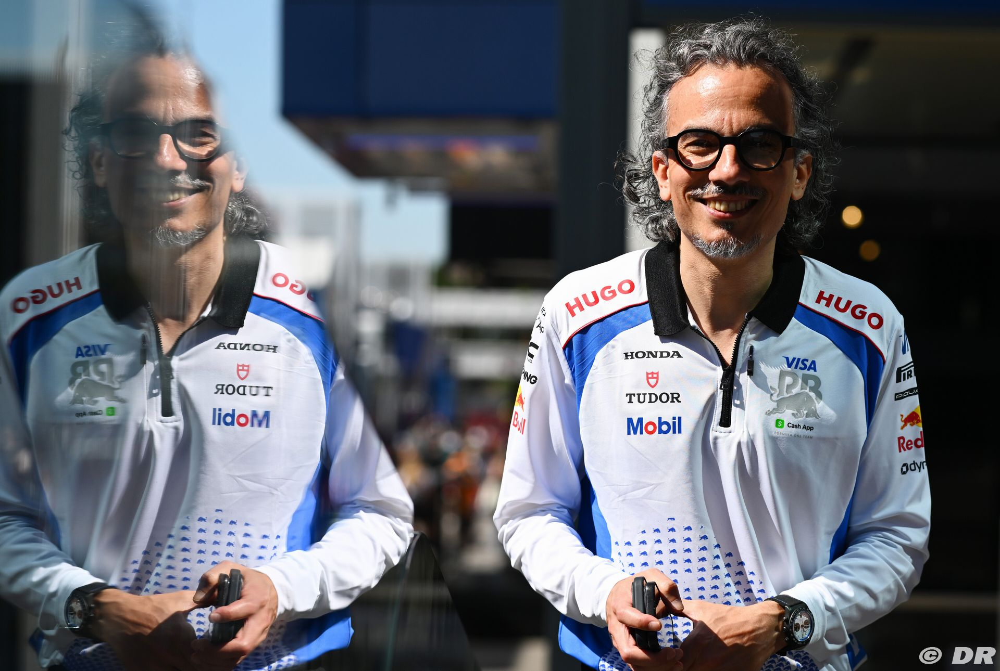
Laurent Mekies
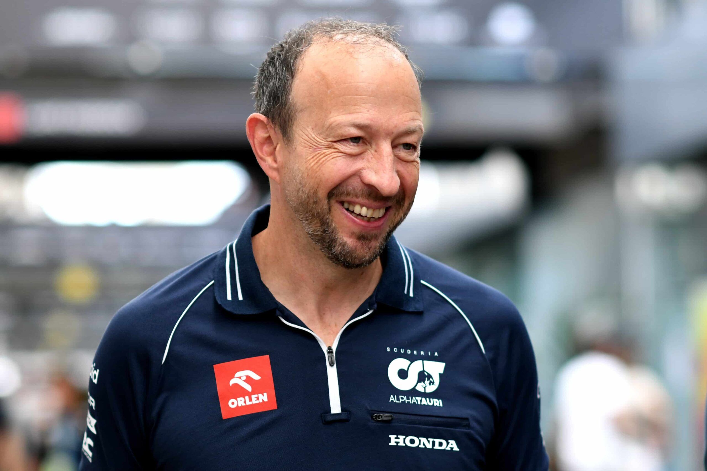
Peter Bayer

Stake F1 Team Kick Sauber
Información General de la escuderia:
| Nombre de la escuderia: | Stake F1 Team Kick Sauber |
|---|---|
| Nacionalidad | Suiza |
| Año de debut en la F1 | 1993 |
| Equipos Anteriores | Sauber (1993-2005), BMW Sauber (2006-2009), Sauber F1 (2010-2018), Alfa Romeo (2019-2023) Kick Sauber (2023-2025) Audi (2026-) |
| Temporadas en la F1: | 32 |
| Campeonatos de constructores ganados | 0 |
| Titulos de pilotos: | 0 |
Directiva de Kick
| Jefe de Escuderia | CEO | |
|---|---|---|
| Nombre | Alessandro Aluni Bravi | Andrea Sedi |
| Nacionalidad: | Italiana | Alemana |
| Edad. | 49 | 48 |
| Temporadas en F1: | 11 (desde 2013 amb sauber) | 13 |
| Temporadas como jefe: | 2 | 3 |
| Titulos Totales: | 0 | 1 (Director de Porsche en WEC9) |
| Titulos como jefe: | 0 | 0 |
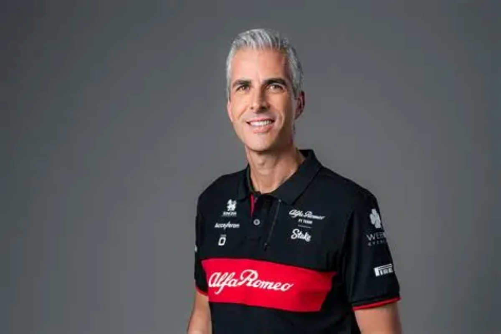
Alessandro Aluni Bravi
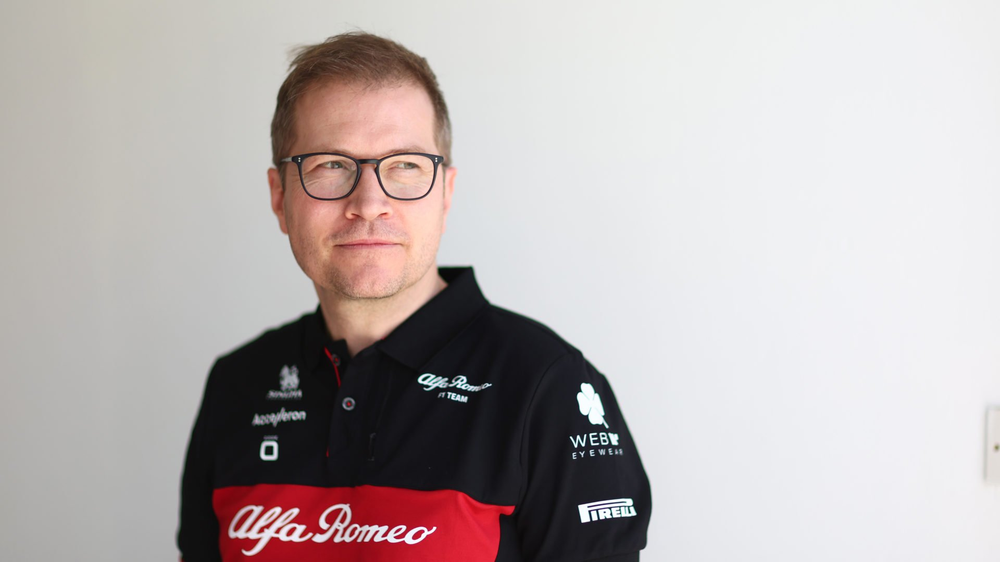
Andrea Sedi
Coche mas iconico y Coche actual
Coche Temporada 2025
| Nombre del coche: | C45 |
|---|---|
| Fabricante motor: | Ferrari |
| Motor | Ferrari 066/12 |
Coche mas iconico de la escuderia
| Modelo: | BMW Sauber F1.07 |
|---|---|
| Temporada | 2007 |
| Piloto Estrella | Robert Kubica |
| Motor: | BMW P86/7 V8 |
MoneyGram Haas F1 Team
Información General de la escuderia:
| Nombre de la escuderia: | MoneyGram Haas F1 Team |
|---|---|
| Nacionalidad | Americana |
| Año de debut en la F1 | 2016 |
| Equipos Anteriores | - |
| Temporadas en la F1: | 10 |
| Campeonatos de constructores ganados | 0 |
| Titulos de pilotos: | 0 |
Directiva de Has
| Jefe de Escuderia | CEO | |
|---|---|---|
| Nombre | Ayao Komatsu | Gene Has |
| Nacionalidad: | Japonesa | Esadounidens |
| Edad. | 48 | 72 |
| Temporadas en F1: | 22 (Desde Bar Honda, despres Renault Lotus i Has) | 10 |
| Temporadas como jefe: | 2 | 10 |
| Titulos Totales: | 0 | 0 |
| Titulos como jefe: | 0 | 0 |

Ayao Komatsu

Gene Has


Max
Verstappen
🇳🇱 Netherlands · Red Bull Racing · #1
1
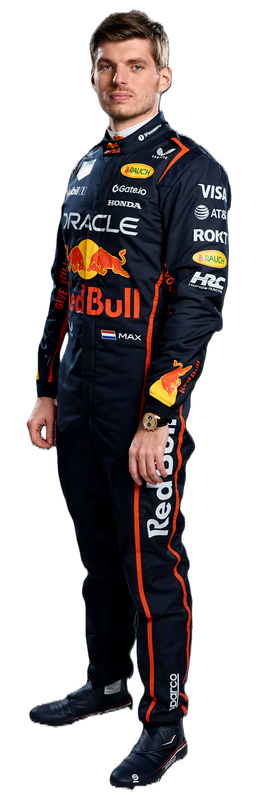
| Nom i Cognoms: | Max | Verstappen |
|---|---|---|
| Nacionalitat: | Holandesa | |
| Data Naixament: | 30/09/1997 | |
| Pares: | Josh Verstappen (Ex pilot de formula 1 i actual pilot de rallys a l'escuderia Skoda) | Sophie-Marie Kumpen (Tambe ex pilota de karting, i formula A i super A.) |
| Esposa: | Kelly Piquet (Model, filla del 3 vegades campeo mundial de la F1 Nelson Piquet, ex parella del ex pilot de F1 daniil Kvyat) | |
| Numero | 1, i abans el 33. | |
| Noms: | Mad Max, Super Max, El neerlandes volador, Maxsplaning |
| Inici: | Any 2015 | |
|---|---|---|
| Escuderia d'iniiament: | Toroo Rosso | |
| Numero d'escuderies: | 2 | Toro Rosso(2015-2016),Red Bull(2016-actualitat) |
| Inicis abans de la F1: | karting: | 2005 i 2006 Campeo karting belgica mini Category,2007 campio Karting belgica i Holanda Mini Max Category,2008 campio Belgica RotaMax karting Mini max Category, Benelux karting mini max category i Belgica Karting champinoship Cadet Category, 2009 Campio Belgica RotaMax mini max category, Belanux Karting mini max category, Belgica Karting Kampioenschap KF5 category,2010: 2nd Winter Cuo KF3,Campeo WSK Euro Series KF3, Campio WSK World Series KF3, 5th CIK-FIA European championship KF3, 2nd CIK-FIA World Cup KF3, Campeo Brudgestone-cup Final KF3, Campeo WSK Nations Cup KF3,2011: 2nd Winter Cup KF3, 3rd Round 1 WSK Master Series KF3,Campeo WSK Euro Series KF3, 14th CIK-FIA European Championship KF3,DNF CIK-FIA World Cup KF3,2012: Campeo Winter Cup KF2, Campeo WSK Master Series KF2, Campeo Round 1 BNL Karting Series KZ2, 6th WSK Euro Series KF2, 10th CIK-FIA European Championship KF2, 8th CIK-FIA- World Karting champinship KF1, DNF 4e Ronde Deutsche Kart Meisterschaft DSKM/KZ2, DNF CIK-FIA WORLD CUP KZ2, 2nd CIK-FIA WORLD CUP KF2, DNF Superkarts USA Supernationals KZ2, 2013: Campeo Winter Cup,KF2, Campeo WSK Master Series KZ2, Campeo WSK Euro Series KZ1, 2nd-Rotax Max Euro Challenge Senior, Campeo CIK-FIA European Championship KZ, Campeo CIK-FIA European Championship KF, Campeo CIK-FIA World Championship KZ, 3rd CIK-FIA World Championship KF, 2014: Florida Winter series(Sebring: 4,DNF,8, Palm Beach: 2,7,1, Homestead: 3,DNF,3, Homestead: 4,5,1). |
| Formula 4: | No va estar | |
| Formula 3: | 2014: 3 FIA Formula 3 Europe, Campeo Masters of Formula 3 - Zandvoort, 7 Macau Grand Prix - Formula 3. | |
| Formula 2: | No va Estar. | |
| Formula 1: | 2014: Pilot Proves Toro Rosso. 2015: 12 amb 49 punts. 2016: 5 amb 204 punts. 2017: 6 amb 168 punts. 2018: 4 amb 249 punts. 2019: 3 amb 278 punts. 2020: 3 amb 214 punts. 2021: Campeo amb 395.5 punts. 2022: Campeo amb 454 punts. 2023: Campeo amb 575 punts. 2024: Campeo amb 437 punts. 2025: Esta 3r al mundial empatat de punts amb el segon i a 24 punts del primer i queden dos carreres i una sprint i per guanyar necessita guanya les dues carreres i l'esprint i que norris sigui tercer en l'esprint tercer o pitjor en una carrera i 4t o pitjor en un altre. |
| Mundials de F1: | 4 |
|---|---|
| Carreres F1: | 231 |
| Punts de carrera: | 3389.5 |
| Victories F1: | 69 |
| Podiums: | 125 |
| Voltes Rapides: | 36 |
| Pole Postion: | 47 |
| DNF: | 33 |
Yuki Tsunoda
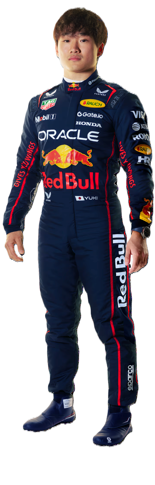| Nom i Cognoms: | Yuki | Tsunoda |
|---|---|---|
| Nacionalitat: | Japonesa | |
| Data Naixament: | 11/5/2000 | |
| Pares: | Nobuaki Tsunoda | Minako Tsunoda |
| Numero | 22 | |
| Noms: | El niño problematico, Yukkii, Yukko |
| Inici: | 2021 | |
|---|---|---|
| Escuderia d'iniiament: | AlphaTauri | |
| Numero d'escuderies: | 2 | AlphaTauri (2021-2025), RedBull(2025) |
| Inicis abans de la F1: | karting: | 2006: Campeo de la serie en Nakai Inter Cirucit. 2007:Primer en el East Japan Junior Comer 60. 2008: Campeo de la copa Mobara Oest. 2009: Tercer en la serie Junior Expert del Est de Japó. 2010: 6e al Campeonat de Cadets Juvenils FP de Japó, Campeo de la Copa NTC de Tokio, 2gn en la Copa Haruna. 2011: 5e al Campeonat de Cadets Juvenils FP de Japó, Campeo de la Copa NTC de Tokio, Campeo de la Copa Haruna, Guanyador del Festival d'estiu Yamaha SL, Campeo del Campeonat Nacional Yamaha SL, i entra com pilot oficial de Kosmic Junior Racing Team. 2012: 3er En la Categoria Junior de la All Japan FP i 1er en la regio est, Guanyador del Festival d'estiu Yamaha SL, 4rt Al Campeonat Nacional Yamaha SL SS, 2gn de la clase FP Junior del Campeonat mundial de Karting. 2013: Campeo de la Serie del Districte Est del Campeonat Regional de Karting de Japó, Campeo Twing Ring Motegi Kart Race Series, 2gn a la Classificació de carrera de punts de desafio X30. 2014: 11a del Campeonat de Japo Categoria FS-125, Guanyador del Campeonat IAME X30 de Japó, va participar a la Final Internacional IAME (en Le Mans). 2015: 1er en la Regio Est i 2gn en el Campeonat de Japo Categoria FS-125. 2016: 4rt en el Campeonat nacional de Japó categoria KF. |
| Formula 4 Japonesa: | 2016: 16 F4 Japan. 2017: 3 F4 Japan, Campeo JAF Japan Formula 4 - East. 2018: Campeo F4 Japan. | |
| Formula 3: | 2019: 9 FIA Formula 3, 4 Euroformula Open, 11 Macau Grand Prix - FIA F3 World Cup. | |
| Formula 2: | 2020: 3 FIA Formula 2 Championship. | |
| Formula 1: | 2021: 14 amb 32 punts. 2022: 17 amb 12 punts. 2023: 14 amb 17 punts. 2024: 12 amb 30 punts. 2025: 17 amb 28 punts. |
| Mundials de F1: | 0 |
|---|---|
| Carreres F1: | 109 |
| Punts de carrera: | 119 |
| Victories F1: | 0 |
| Podiums: | 0 |
| Voltes Rapides: | 0 |
| Pole Postion: | 0 |
| DNF: | 15 |
George Russell
| Nom i Cognoms: | George William | Rusell |
|---|---|---|
| Nacionalitat: | Britanica | |
| Data Naixament: | 15/2/1998 | |
| Pares: | Steve Russell | Alison Russell |
| Numero | 63 | |
| Noms: | Mr Consistency, Georgina |
| Inici: | 2017 Com pilot de probes i a 2019 com pilot de williams | |
|---|---|---|
| Escuderia d'iniiament: | Willams | |
| Numero d'escuderies: | 2 | Willams(2019-2021), Mercedes(2020-Actualitat) |
| Inicis abans de la F1: | karting: | 2009: 2gn al Campeonat Super One Series Cadet, Campeo del British Open Championship Cadet, Campeo Formula Kart Stars Cadet, Campeo Kartmasters British GP Cadet. 2010: Campeo Super One Series Mini Max, Campeo Formula Kart Stars Mini Max, Campeo Kartmasters British GP Mini Max. 2011: Campeo CIK-FIA European KF3 Championship, Guanyador SKUSA SuperNationals (TaG Junior), 5e WSK Euro Series KF3, 5e WSK Master Series KF3. 2012: Campeo CIK-FIA European KF3 Championship, 2gn Super One Series KF3, 2gn SKUSA SuperNationals, 3er WSK Master Series, 5e WSK Euro Series. 2013: Campeo WSK KZ2, Campeo CIK KZ2. |
| Formula 4: | 2014: Campeo BRDC Formula 4 Championship, 4rt Formula Reault 22.0 Alps, Participacio Formula Renault 2.0 Eurocup amb una victoria. | |
| Formula 3: | GE FIA Formula 3 European Championship. 2016: 3er FIA Formula 3 European Championship. 2017: Camepo GP3 Series (ART Grand Prix). | |
| Formula 2: | 2018: Campeo FIA Formula 2 2018. | |
| Formula 1: | 2019: 20. 2020: 18 amb 3 punts. 2021: 15 amb 16 punts. 2022: 4rt amb 27 punts 2023: 8e amb 17 punts. 2024: 6e amb 24 punts. 2025: 4rt amb 294 punts. |
| Mundials de F1: | 0 |
|---|---|
| Carreres F1: | 150 |
| Punts de carrera: | 1008 |
| Victories F1: | 5 |
| Podiums: | 24 |
| Voltes Rapides: | 11 |
| Pole Postion: | 7 |
| DNF: | 19 |
Kimi Antonelli
| Nom i Cognoms: | Kimi Andrea | Antonelli |
|---|---|---|
| Nacionalitat: | Italiana | |
| Data Naixament: | 25/7/2006 | |
| Pares: | Marco Antonelli | |
| Numero | 12 | |
| Noms: | Nuevo Max Verstappen, Rookie, Kimi |
| Inici: | 2025 | |
|---|---|---|
| Escuderia d'iniiament: | Mercedes | |
| Numero d'escuderies: | 1 | Mercedes(2025-2026 confirmat) |
| Inicis abans de la F1: | karting: | 2014: 6e Trofeo Nazionale 60 Baby, 14e Italian Cup Central Zone 60 Baby, 2gn Baby Academy International final. 2015: Campeo Easykart Italia 60cc, Campeo Easykart International Grand Final 60cc, 22e WSK Nigth Edition 60Mini, 31e WSK Final Cuop 60Mini. 2016: 3ER Italian Cup 60Mini, 3er Trofeo delle Industrie 60Mini, 16e WSK , 6e WSK Final Cup 60Mini. 2017: Campeo Tercera ronda Campeonat italia Karting categoria 60 Mini, 3er WSK Super Master Series 60 Mini, 8e Campeonat Italia 60 Mini. 2018: Guanyador WSK Champions Cup 60 Mini, Guanyador South Grada Winter Cup Mini ROK, 3er WSK Super Master Series 60 Mini, 2gn Campeonat Italia 60 Mini, Guanyador ROK Cup International Final Mini ROK. 2019: Guanyador South Grada Winter Cup OKJ, Campeo WSK Super Master Series OKJ, Campeo WSK Euro Series OKJ, Guanyador WSK Open Cup OKJ, Guanyador WSK Final Cup OKJ, 2gn Campeonat Eurepeu de Karting OKJ, 5e Campeonat Mundial de Karting OKJ. 2020: Campeo FIA Karting European Championship OK, Guanyador WSK Euuro OK, Campeo Italian ACI Karting OK. 2021: Campeo FIA Karting European Championship OK, 2gn WSK Champions Cup OK, 2gn WSK Super Master Series OK. |
| Formula 4: | 2021: 10 Italian Formula 4 Championship, 9e FIA Central European Zone Formula 4 Championship, 3er F4 United Arab Emirates Championship. 2022: Campeo Italian Formula 4 Champiopnship, Campeo ADAC Formula 4 Championship, 8e F4 United Arab Emirates Championship, Guanyador FIA Motorsport Games Formula 4 Cup. 2023: Campeo Formula Regional Middle East Championship, Campeo Formula Regional European Championship. | |
| Formula 3: | No va corre. | |
| Formula 2: | 2024: 6e FIA Formula 2 Championship. | |
| Formula 1: | 2025: Septim amb 137 Punts. |
| Mundials de F1: | 0 |
|---|---|
| Carreres F1: | 22 |
| Punts de carrera: | 137 |
| Victories F1: | 0 |
| Podiums: | 3 |
| Voltes Rapides: | 3 |
| Pole Postion: | 0 |
| DNF: | 4 |
Kimi Antonelli
| Nom i Cognoms: | Charles Marc Hervé Perceval | Leclerc |
|---|---|---|
| Nacionalitat: | Monegasca | |
| Data Naixament: | 16/10/1997 | |
| Pares: | ||
| Numero | 16 | |
| Noms: | Il Predestinato, Lord Perceval |
| Inici: | 2018 | |
|---|---|---|
| Escuderia d'iniiament: | Sauber | |
| Numero d'escuderies: | 2 | Sauber, Ferrari |
| Inicis abans de la F1: | karting: | 2005: Campeo Campeonat Regional PACA Mini. 2006: Campeo PACA Mini. 2007: 2gn Campeonat regional Nacional Frances Minime. 2008: 2gn Capeonat nacional Frances Minime. 2009: Campeo Campeonat Nacional Frances Cadet. 2010: Guanyador Monaco Kart Cup KF3. 2011: Campeo FIA Karting World Cup KF3, Campeo FIA Karting Academy Trophy, Campeo ERDF Masters Kart Junior. 2012: Campeo WSK Euro Series KF2, 2gn CIK-FIA European Championship KF2, 2gn CIK-FIA U18 World Championship. 2013: Guanyador South Grada Winter Cup KZ2, 2gn FIA Karting World Championship KZ. |
| Formula 4: | 2014: 2gn Formula Renault 2.0 Alps, participació a la Eurocup Formula Renault 2.0 amb varis podiums. | |
| Formula 3: | 2015: 8e FIA European F3 Championship. 2016: Campeo GP3 2016. | |
| Formula 2: | 2017: Campeo FIA Formula 2 Championship. | |
| Formula 1: | 2018: 13 amb 39 punts. 2019: 4rt amb 264 punts. 2020: 8e amb 98 punts. 2021: septim amb 159 punts. 2022: 2gn amb 308 punts. 2023: 5e amb 206 punts empatat amb Alonso. 2024: 3er amb 356 punts. 2025: 5e amb 226 punts. |
| Mundials de F1: | 0 |
|---|---|
| Carreres F1: | 169 |
| Punts de carrera: | 1656 |
| Victories F1: | 8 |
| Podiums: | 50 |
| Voltes Rapides: | 10 |
| Pole Postion: | 27 |
| DNF: | 23 |
Lewis Hamilton
| Nom i Cognoms: | Lewis Carl Davidson | Hamilton Larbalestier |
|---|---|---|
| Nacionalitat: | Britanica | |
| Data Naixament: | 7/1/1985 | |
| Pares: | Anthoni Hamilton | |
| Numero | 44 | |
| Noms: | Sir Lewis Hamilton, Hammer, Hammerhead Shark. |
| Inici: | 2007 | |
|---|---|---|
| Escuderia d'iniiament: | Mclaren | |
| Numero d'escuderies: | 3 | Mclaren-Mercedes, Mercedes, Ferrari. |
| Inicis abans de la F1: | karting: | 1995: Campeo Super1 National Championship Cadet. 1996: Campeo Kartmasters British Grand Prix Comer Cadet. 1997: Campeo Super1 National Championship Formula Yamaha. 1999: Campeo Torneo Industrie Open ICA. 2000: Campeo World Karting Championship Forumla A, Campeo European Championship Formula A. |
| Formula 4: | 2001: 5e Forumla Renault UK Winter Series. 2002: 3er Formula Renault UK. 2003: Campeo Formula Renault UK. | |
| Formula 3: | 2004: 5e Forumla 3 Euro Series. 2005: Campeo Formula 3 Euro Series, Campeo Malboro Masters of Forumla 3. | |
| GP2 (Antiga Formula 2): | 2006: Campeo GP2 2006. | |
| Formula 1: | 2007: 2gn amb 109 punts empatat amb Alonso (Començament de les disputes amb Alonso). 2008: Campeo F1 2008. 2009: 5e amb 49 punts. 2010: 4rt amb 240 punts. 2011: 5e amb 227 punts. 2012: 4rt amb 190 punts. 2013: 4rt amb 189 punts. 2014: Campeo F1 2014. 2015: Campeo F1 2015. 2016: 2gn amb 380 punts (5 punts de diferencia amb el campeo). 2017: Campeo F1 2017. 2018: Campeo F1 2018: Campeo F1 2018. 2019: Campeo F1 2019. 2020: Campeo F1 2020. 2021: 2gn amb 387.5 punts (perd el campeonat a la ultmia volta contra verstappen). 2022: 6e amb 240 punts. 2023: 3r amb 234 punts. 2024: septim amb 223 punts. 2025: 6e amb 152 punts. |
| Mundials de F1: | 7 |
|---|---|
| Carreres F1: | 378 |
| Punts de carrera: | 5014.5 |
| Victories F1: | 105 |
| Podiums: | 202 |
| Voltes Rapides: | 68 |
| Pole Postion: | 104 |
| DNF: | 34 |
Lando Norris
| Nom i Cognoms: | Lando | Norris |
|---|---|---|
| Nacionalitat: | Britanica i Belga | |
| Data Naixament: | 13/11/1999 | |
| Pares: | Anthoni Hamilton | |
| Numero | 4 | |
| Noms: | Lando No-Wins, Last Lap Lando, Vo-Lando Norris i Blando Norris. |
| Inici: | 2019 | |
|---|---|---|
| Escuderia d'iniiament: | Mclaren | |
| Numero d'escuderies: | 1 | Mclaren. |
| Inicis abans de la F1: | karting: | 2008: 35e Super One Series Comer Cadet. 2009: 14e Super One Series Comer Cadet, 3er Formula Karts Stars Cadet. 2010: 3er Super One Series Commer Cadet, Decim Formula Kart Stars Cadet, 27 Kartmasters British GP Commer Cadet. 2011: 6e MSA British Championship Cadet, 25e Kartmasters British GP Comer Cadet, 5e Super One Series Comer Cadet, 27 Trent Valley Kart Club MiniMax. 2012: 19e Rotax Max Euro Trophy Junior Max, 18e Formula Kart Stars Junior Max, Campeo Formula Kart Stars Mini Max, 3er WSK Final Cup KF3, 3er Copa de Campeons KF3, 2gn Super 1 Series Mini Max, 4rt Kartmasters British GP Mini Max. 2013: 4rt FIA Kart World Championship KF Junior, Campeo FIA Karting European Championship KF Junior, Campeo WSK Euro Series KF Junior, Septim WSK Final Cup KF Junior, Campeo FIA International Super Cup KF Junior, 5e Trfeig Andrea Margutti KF Junior, 5e South Grada Winter Cup KF3, 2gn WSK Super Master Series KF Junior, 5e Trofeig Delle Industrie KF3, 13e Italian ACI Karting Championship KF3. 2014: 3er Ginetta Junior, Campeo FIA Karting World Championship KF, 34 South Garda Winter Cup KF2, 12e WSK Super Master Series KF, 3er CIK-FIA Euorpean Championship KF. |
| Formula 4: | 2015: Campeo MSA Formula 4, 11 Italian F4, 8e ADAC Formula 4 Germany, 5e Autumn Trophy British F4. 2016: Campeo Toyota Rcing Series. | |
| Formula 3: | 2016: 8e BRDC British Formula 3, Campeo Formula Renault 2.0 Eurocup, Campeo Formula Renault 2.0 NEC, 11 Macau Grand Prix FIA F3 World Cup. 2017: Campeo FIA Formula 3 Europe, 2gn Macau Grand Prix FIA F3 World Cup. | |
| Formula 2 | 2017: 25 FIA Forumula 2 Championship. 2018: 2gn FIA Formula 2 Championship. | |
| Formula 1: | 2019: 11 amb 49 punts. 2020: 9e amb 97 punts. 2021: 6e amb 160 punts. 2022: septim amb 122 punts. 2023: 6e amb 205 punts. 2024: 2gn amb 374 punts. 2025: actualment 1r amb 390 punts. |
| Mundials de F1: | 0 |
|---|---|
| Carreres F1: | 150 |
| Punts de carrera: | 1397 |
| Victories F1: | 11 |
| Podiums: | 43 |
| Voltes Rapides: | 18 |
| Pole Postion: | 16 |
| DNF: | 13 |
Oscar Piastri
| Nom i Cognoms: | Oscar Jack | Piastri |
|---|---|---|
| Nacionalitat: | Australiana | |
| Data Naixament: | 6/04/2001 | |
| Pares: | ||
| Numero | 81 | |
| Noms: | Ice Boy, Polite Cat, Osc i Osoco. |
| Inici: | 2023 | |
|---|---|---|
| Escuderia d'iniiament: | Mclaren | |
| Numero d'escuderies: | 1 | Mclaren. |
| Inicis abans de la F1: | karting: | 2014:8e Australian National Sprint Kart Championship Junior National Light, 2gn Australian National Sprint Kart Championship Junior Clubman, 3er IAME International Final X30 Junior. 26e FIA Karting European Championship KF Junior, 3er Australian Kart Championship KF3. 2016: 29 WSK Champions Cup OK Junior(Amb Alonso FA Kart), 12e WSK Super Master Series OK Junior, 16e FIA Karting European Champ OK Junior ( amb kart Alonso), 6e FIA Karting World Cup OK Junior, 8e WSK Final Cup OK Junior, decim South Garda Winter Cup OK Junior. |
| Formula 4: | 2017: 4rt F4 EUA, 2gn F4 British Championship, 18th Forimla Renault 2.0 NEC. 2018: 8e Eurocup Formula Renault. 2019: Campeo Formula Renault Euorcup. | |
| Formula 3: | 2020: Campeo FIA Formula 3. | |
| Formula 2 | 2021: Campeo FIA Formula 2 Championship. | |
| Formula 1: | 2023: 9e amb 9 punts. 2024: 4rt amb 292 punts. 2025: Actualment 2gn amb 366 punts. |
| Mundials de F1: | 0 |
|---|---|
| Carreres F1: | 68 |
| Punts de carrera: | 755 |
| Victories F1: | 9 |
| Podiums: | 24 |
| Voltes Rapides: | 8 |
| Pole Postion: | 5 |
| DNF: | 4 |
Fernando Alonso
| Nom i Cognoms: | Fernando | Alonso Diaz |
|---|---|---|
| Nacionalitat: | Espanyola (Asturies) | |
| Data Naixament: | 29/7/1981 | |
| Pares: | Jose Luis Alonso | Ana Maria Diaz |
| Numero | 14 | |
| Noms: | Magic, Nano, El Samurai. |
| Inici: | 2001 | |
|---|---|---|
| Escuderia d'iniiament: | Mirandi | |
| Numero d'escuderies: | 8 | Mirandi(1 Sola carrera en Alemania va qudar decim), Renault(2002 com pilot de probes i tambe com pilot de proves a jaguar.), Renault(2003-2006), Mclaren-Mercedes(2007), Reanult(2008-2009), Ferrari(2010-2014), Mclaren-Honda(2015-2017), Alpine(2021-2022), Aston Martin(2023-2026 de moment). |
| Inicis abans de la F1: | karting: | 1983: condueix per primera vegada. 1987: Condueix el seu primer kart construit pel seu pare. 1988: Guanya el seu primer titol d'infantils amb 8 carreres. 1990: Guanya a Asturies i Pais Vasc Cadet. 1991: 2gn Campeonat d'Espanya de Karting Cadet. 1992: Campeo d'España de Karts Cadet. 1993: Campeo d'Espanya de Karts Junior. 1994: Campeo d'Espanya de Karts Junior. 1995: Campeo d'Espanya Karts Junior, 3er Campeonat Mundial Rainbow Trophy Cadet, 19e Trofeig Andrea Margutti. 1996: 15e Trofeig Andrea Margutti 100 Junior, Campeo Mindial FIA Karting Junior A, 28e Trofeig Delle Industrie 100 Nazion. 1997: 4rt Trogeig Andrea Margutti ICA, Campeo a Espanya i Italia. 1998: Campeo Espanya Inter-A, 2gn FIA European Championship Formula A, Septim Trofeig Andrea Margurri Formula A. 1999: Campeo Open By Nissan, 18e FIA European Championship Formula Super A, 19e FIA World Championship Formula Super A, 5e Trofeig Andrea Margutti Formula A. |
| Formula 4: | No Hi habia en aquella epoca | |
| Formula 3: | 2000: 4rt FIA International Formula 3000 (Antiga Formula 3). | |
| Formula 2 | 2021: Campeo FIA Formula 2 Championship. | |
| Formula 1: | 2000: Pilot de proves Benetton. 2001: fa 17 carreres amb mriandi amb 9 abandons. 2002:Pilot de proves de Renault i Jaguar. 2003: 6e amb 55 punts i la seva primera victoria i 4 podiums. 2004: 4rt amb 59 punts , i te una de les seves millor salides sortint nove i acanbant tercer. 2005: Campeo F1 2005 amb 133 punts i també guanya mundial d'escuderies i siguent el priemr i unic Espanol camepo de F1 i rep el premi Princep d'asturies dels esports. 2006: Campeo amb 134 punts i també guanya el campeonat d'ecudeires. 2007: 2gn amb 109 punts. 2008: 5e amb 61 punts. 2009: 9e amb 26 punts. 2010: 2gn amb 252 punts. 2011: 4rt amb 257 punts. 2012: 2gn amb 278 punts. 2013: 2gn amb 242 punts. 2014: 6e amb 161 punts. 2015: 17 amb 11 punts. 2016: decim amb 54 punts. 2017: 15 amb 17 punts. 2018: 11a amb 50 punts. 2021: decim amb 81 punts. 2022: nove amb 81 punts. 2023: 4rt amb 206 punts. 2024: nove amb 70 punts. 2025: 13 amb 40 punts. | |
| Altres competicions: | 2017: 29 500 Milles d'indianapolis. 2018: Corre a les 24h Daytona, Campeo de les 24H SPA-FRANCORCHAMPS, Campeo 24 HORES DE LE MANS. 2019: Campeo de les 24 HORES DAYTONA, Gunayador en LES 1000 MILLES DE SBRING, 3r 24 HORES DUBAI, Campeo 6 HORES DE SPA-FRANCORCHAMPS, CAMPEO 24 HORES LE MANS, Campeo del Mundial de Resistencia, 3er RALLY ARABIA SAUDI. 2020: 2gn En la vuitena etapa Rally Dakar, 31 500 Milles Indianapolis. |
| Mundials de F1: | 2 |
|---|---|
| Carreres F1: | 425 |
| Punts de carrera: | 2377 |
| Victories F1: | 32 |
| Podiums: | 106 |
| Voltes Rapides: | 26 |
| Pole Postion: | 22 |
| DNF: | 83 |
Lance Stroll
| Nom i Cognoms: | Lance | Stroll |
|---|---|---|
| Nacionalitat: | Canadiense | |
| Data Naixament: | 29/10/1998 | |
| Pares: | Lawrance Stroll | |
| Numero | 18 | |
| Noms: | Lancelot |
| Inici: | 2017 | |
|---|---|---|
| Escuderia d'iniiament: | Williams | |
| Numero d'escuderies: | 3 | Williams, Racing Point Aston Martin |
| Inicis abans de la F1: | karting: | 2008: Campeo Cnadian National Karting Rotax Micro, Campeo Coupe Montreall Micro Max, Campeo Coupe de Quebec Micro Max. 2009: 2gn Florida Winter Tour Micro Max, Septim ROK Cup International Final Mini Rok, 2gn Canadian National Karting Mini Max, Campeo Coupe de QUebec Mini Max, Campeo Coupe de Montreal Mini Max. 2010: Campeo Florida Winter Tour Mini Max, 39 SKUSA SUPER NATIONASL TAG Junior, Campeo Canadian National Karting Rotax Junior, 2gn Coup de Quebec - Rotax Junior. 2011: Nove WSK Euro Series - KF3, 11 German Karting Championship - KF3, 25 FIA Karting World Cup - KF3, 8e SKUSA SuperNationals XV - TaG Junior, Decim ERDF Masters Kart - Junior, 16 Bridgestone Cup Europe - KF3, 15e WSK Final Cup - KF3, 18e Italian ACI Karting Championship - KF3. 2012: 2gn Trofeo Andrea Margutti - KF3, 21 CIK-FIA European Championship - KF3, 4rt WSK Master Series - KF3, 12e WSK Euro Series - KF3, Campeo SKUSA SuperNationals XVI - TaG Junior, Decim FIA Karting World Cup - KF3, 12 WSK Final Cup - KF3, Campeo 41° Trofeo delle Industrie - KF3, Decim Coupe de Quebec - Rotax Junior. 2013: 43 CIK-FIA European Championship - KF, 13 WSK Euro Series - KF, 6e FIA Karting World Championship - KF, 12 CIK-FIA International Super Cup - KF, 22 South Garda Winter Cup - KF2, 5e WSK Super Master Series - KF. |
| Formula 4: | 2014: 12 Florida Winter Series, Campeo Italian F4. 2015: Campeo Toyota Racing Series. | |
| Formula 3: | 2015: 5 FIA Formula 3 Europe, 8 Macau Grand Prix - FIA F3 International Cup. 2016: Campeo FIA Formula 3 Europe. | |
| Formula 2 | No va estar. | |
| Formula 1: | 2017: 12 amb 40 punts. 2018: 18 amb 6 punts. 2019: 15 amb 21 punts. 2020: 11 amb 75 punts. 2021: 13 amb 34 punts. 2021: 12 amb 34 punts. 2022: 15 amb 18 punts. 2023: Decim amb 74 punts. 2024: 13 amb 24 punts. 2025: 16 amb 32 punts. |
| Mundials de F1: | 0 |
|---|---|
| Carreres F1: | 188 |
| Punts de carrera: | 324 |
| Victories F1: | 0 |
| Podiums: | 3 |
| Voltes Rapides: | 0 |
| Pole Postion: | 1 |
| DNF: | 30 |
Pierr Gasly
| Nom i Cognoms: | Pierre | Gasly |
|---|---|---|
| Nacionalitat: | Francesa | |
| Data Naixament: | 7/2/1996 | |
| Pares: | ||
| Numero | 10 | |
| Noms: | El mal estudiante. |
| Inici: | 2017 | |
|---|---|---|
| Escuderia d'iniiament: | Toro Rosso | |
| Numero d'escuderies: | 4 | Toro Rosso, Red Bull, AlphaTauri, Alpine |
| Inicis abans de la F1: | karting: | 2005: 21 French Cup - Mini. 2006:15 Championnat de France - Minime. 2007: 6 French Championship - Minime. 2008: 4 Championnat de France - Cadet. 2009: 10 South Garda Winter Cup - KF3, 23 FIA Karting European Champ. - KF3, 3 FIA Karting World Cup - KF3, 16 Monaco Kart Cup - KF3, 3 SKUSA SuperNationals XIII - TaG Junior, 3 Grand Prix Open Karting - KF3, 3 Championnat de France - KF3. 2010: 10 South Garda Winter Cup - KF3, 2 FIA Karting European Champ. - KF3, 4 FIA Karting World Cup - KF3, 3 Monaco Kart Cup - KF3. |
| Formula 4: | 2011: 3 French F4 Championship. 2012: 23 Formula Renault 2.0 NEC, 10 Formula Renault 2.0 Eurocup. 2013: Campeo Formula Renault 2.0 Eurocup, 6 Formula Renault 2.0 Alps. | |
| Formula 3: | 2014: 2 Formula Renault 3.5 Series. | |
| Formula 2 | 2014: 29 GP2 Series. 2015: 8 GP2 Series. 2016: Campeo GP2 Series. | |
| Formula 1: | 2017: 21 amb 0 punts. 2018: 15 amb 29 punts. 2019: septim amb 95 punts. 2020: 10 amb 75 punts. 2021: 9 amb 110 punts. 2022: 14 amb 23 punts. 2023. 11 amb 62 puntts. 2024: 10 amb 42 punts. 2025: 18 amb 22 punts. |
| Mundials de F1: | 0 |
|---|---|
| Carreres F1: | 175 |
| Punts de carrera: | 458 |
| Victories F1: | 1 |
| Podiums: | 5 |
| Voltes Rapides: | 3 |
| Pole Postion: | 0 |
| DNF: | 26 |
Franco Colapinto
| Nom i Cognoms: | Franco | Colapinto |
|---|---|---|
| Nacionalitat: | Argentina i Italiana | |
| Data Naixament: | 27/05/2003 | |
| Pares: | ||
| Numero | 43 | |
| Noms: | El Nene, Il Gaucho |
| Inici: | 2024 | |
|---|---|---|
| Escuderia d'iniiament: | Williams | |
| Numero d'escuderies: | 2 | Williams i Alpine |
| Inicis abans de la F1: | karting: | 2013: 10 Rotax Max Buenos Aires - Micro Max. 2014: 6 Argentine championship - Promocional. 2015: 11 Argentine championship - Pre-Junior. 2016: Campeo Argentine championship - Pre-Junior, 9 ROK Cup International Final - Junior ROK, 12 SKUSA SuperNationals XX - X30 Junior, 10 Argentinian Champ. - Sudam Junior. 2017: 23 SKUSA SuperNationals XXI - X30 Junior, 2 22nd South Garda Winter Cup - OK Junior. 2018: 22 WSK Champions Cup - OK, 17 South Garda Winter Cup - OK. |
| Formula 4: | 2018: 12 F4 Espanyola, 45 WSK Super Master Series - OK, 69 FIA Karting European Championship - OK, 24 Trofeo Andrea Margutti - OK, Campeo Youth Olympics Karting Exhibition Event. 2019: Campeo F4 Espanyola. 2020: 3 Toyota Racing Series, 3 Formula Renault Eurocup. 2021: 6 Formula Regional Europe. | |
| Formula 3: | 2022: 9 FIA Formula 3 Championship. 2023: 4 FIA Formula 3 Championship. | |
| Formula 2 | 2023: 25 FIA Formula 2 Championship. 2024: 9 FIA Formula 2 Championship. | |
| Formula 1: | 2024: 19 amb 5 punts. 2025: 20 amb 0 punts. |
| Mundials de F1: | 0 |
|---|---|
| Carreres F1: | 25 |
| Punts de carrera: | 5/td> |
| Victories F1: | 0 |
| Podiums: | 5 |
| Voltes Rapides: | 0 |
| Pole Postion: | 0 |
| DNF: | 3 |
Carlos Sainz
| Nom i Cognoms: | Carlos | Sainz Vázquez de Castro |
|---|---|---|
| Nacionalitat: | Espanyola | |
| Data Naixament: | 1/09/1994 | |
| Pares: | Carlos Sainz | Reyes Vázquez de Castro |
| Numero | 55 | |
| Noms: | Smoth Operator,Matador, Carletes, Chili. |
| Inici: | 2015 | |
|---|---|---|
| Escuderia d'iniiament: | Toro Rosso. | |
| Numero d'escuderies: | 5 | Toro Rosso, Renault,Mclaren, Ferrari, Williams. |
| Inicis abans de la F1: | karting: | 2006: 2 Copa Campeones - Cadet, 3 Torneo Industrie - Minikart. 2007: 12 Torneo Industrie - KF3, 11 Spanish Championship - KF3, 6 Copa Campeones Trophy - KF3. 2008: septim Andrea Margutti Trophy - KF3, Septim German Karting Championship - KF3, Septim CIK-FIA European Championship - KF3, 16 WSK International Series - KF3, 2 Spanish Championship - KF3, 12 Monaco Kart Cup - KF3. 2009: 3 WSK International Series - KF3, 5 South Garda Winter Cup - KF3, Septim Trofeo Andrea Margutti - KF3, 2 FIA Karting European Champ. - KF3, 24 FIA Karting World Cup - KF3, 12 German Karting Championship - KF3, Campeo Monaco Kart Cup - KF3, 2 Spanish Championship - KF3. |
| Formula 4: | 2010: 4 Formula BMW Europe, 2 Formula BMW Pacific, 4 Formula Renault 2.0 Eurocup, 18 Formula Renault UK Winter Cup. | |
| Formula 3: | 2010: Invitat a European F3 Open. 2011: 2 Formula Renault 2.0 Eurocup, Campeo Formula Renault 2.0 NEC, Invitat Formula 3 Euro Series, 17 Macau Grand Prix - Formula 3, 2 500km of Alcaniz - D2. 2012: 6 British Formula 3, 9 Formula 3 Euro Series, 5 FIA Formula 3 Europe, 4 Masters of Formula 3 - Zandvoort, 7 Macau Grand Prix - Formula 3. 2013: 10 GP3, Septim Macau Grand Prix - Formula 3, 19 Formula Renault 3.5 Series, Invitat MSV F3 Cup - Invitational class. 2014: Campeo Formula Renault 3.5 Series. | |
| Formula 2 | No va participar | |
| Formula 1: | 2013: pILOT PROVES Toro Rosso. 2014: Pilot proves Infiniti Red Bull Racing. 2015: 15 amb 18 punts. 2016: 12 amb 46 punts. 2017: 9 amb 54 punts. 2018: Decim amb 53 punts. 2019: 6 amb 96 punts. 2020: 6 amb 105 punts. 2021: 5 amb 164.5 punts. 2022: 5 amb 246 punts. 2023: Septim amb 200 punts. 2024: 5 amb 290 punts. 2025: 11 amb 48 punts. |
| Mundials de F1: | 0 |
|---|---|
| Carreres F1: | 228 |
| Punts de carrera: | 1320.5 |
| Victories F1: | 4 |
| Podiums: | 28 |
| Voltes Rapides: | 4 |
| Pole Postion: | 6 |
| DNF: | 42 |
Alexander Albon

| Nom i Cognoms: | Alexander | Albon |
|---|---|---|
| Nacionalitat: | Tailandesa i Britanica | |
| Data Naixament: | 23/03/1996 | |
| Pares: | ||
| Numero | 23 | |
| Noms: | Albono, Carbono. |
| Inici: | 2019 | |
|---|---|---|
| Escuderia d'iniiament: | Toro Rosso | |
| Numero d'escuderies: | 3 | Toro Rosso, Red Bull, Williams |
| Inicis abans de la F1: | karting: | 2006: Campeo Super One Series - Honda Cadet, 17 Super One Series - Comer Cadet, Campeo Kartmasters British GP - Comer Cadet. 2007: 4 British Kart Championship - Cadet, 2 Super One Series - Comer Cadet, 3 British Open Championship - Honda Cadet, 6 Kartmasters British GP - Comer Cadet. 2008: 3 Super One Series - KF3, 2 BRDC Stars of Tomorrow KF3 championship, Campeo Kartmasters British GP - KF3. 2009: 5 WSK International Series - KF3, Campeo KF Winter Series - KF3, Campeo Super One Series - KF3, Campeo Formula Kart Stars - KF3. 2010: 3 South Garda Winter Cup - KF3, Invitat Trofeo Andrea Margutti - KF3, Campeo FIA Karting European Champ. - KF3, 2 WSK Euro Series - KF3, Campeo FIA Karting World Cup - KF3, 4 Monaco Kart Cup - KF3. 2011: 4 South Garda Winter Cup - KF2, 2 WSK Euro Series - KF1, 2 FIA Karting World Championship - KF1, 10 WSK Master Series - KF2. |
| Karting Avaçat (Superior a F4): | 2012: 17 Formula Renault 2.0 Alps, Invitat Formula Renault 2.0 Eurocup. 2013: 16 Formula Renault 2.0 Eurocup, 22 Formula Renault 2.0 NEC. 2014: 17 Formula Renault 2.0 NEC, 3 Formula Renault 2.0 Eurocup. | |
| Formula 3: | 2015: 7 FIA Formula 3 Europe, 13 Macau Grand Prix - FIA F3 Internat. Cup. 2016: 2 GP3, 5 Masters of Formula 3 - Zandvoort. | |
| Formula 2 | 2017: 10 FIA Formula 2 Championship. 2018: 3 FIA Formula 2 Championship. | |
| Formula 1: | 2019: 8 amb 92 punts. 2020: 7 amb 105 punts. 2022: 19 amb 4 punts. 2023: 13 amb 27 punts. 2024: 16 amb 12 punts. 2025: 8 amb 73 punts. |
| Mundials de F1: | 0 |
|---|---|
| Carreres F1: | 126 |
| Punts de carrera: | 313 |
| Victories F1: | 0 |
| Podiums: | 2 |
| Voltes Rapides: | 1 |
| Pole Postion: | 0 |
| DNF: | 22 |
Liam Lawson
| Nom i Cognoms: | Liam | Lawson |
|---|---|---|
| Nacionalitat: | Neozelandesa | |
| Data Naixament: | 11/02/2002 | |
| Pares: | ||
| Numero | 30 | |
| Noms: | Slowson, El Gravas(grava es la pedra que hi ha al circuit.) |
| Inici: | 2023 | |
|---|---|---|
| Escuderia d'iniiament: | Alpha Tauri | |
| Numero d'escuderies: | 3 | Alpha Tauri (Red Bull per per 2 carreres aquest any) i torna a RB Visa Cash Up. |
| Inicis abans de la F1: | karting: | 2011: InvitatNZ Top Half Series - Cadet, 12 New Zealand Sprint Championship - Cadet, 13 NZ National Schools Champ. - Cadet, Invitat Auckland City of Sails - Cadet Raket. 3 Blossom Festival - Cadet. 2012: 21 NZ Top Half Series - Cadet, 3 New Zealand Sprint Championship - Cadet, 7 NZ Top Half Series - Yamaha Junior, 8 NZ Schools Champ. - Junior Restr, 6 North Island Sprint Championship - 100cc Junior Restricted, 5 Auckland City of Sails - Cadet Raket, Campeo CIK Trophy of New Zealand - Cadet. 2013: 5 NZ National Sprint Championship - 100cc Junior Restricted, 10 NZ Top Half Series - Yamaha Junior, 2 NZ Schools Championship - 100cc Junior Restricted, 4 North Island Sprint Championship - 100cc Junior Restricted, 4 Auckland City of Sails - Junior Restricted. 2014: Invitat NZ Top Half Series - Yamaha Junior, Campeo NZ National Sprint Championship - 100cc Junior Restricted, Campeo NZ Schools Championship - 100cc Junior Restricted, 3 Auckland City of Sails - Junior Restricted, 7 North Island Sprint Champ. - Rotax Junior, Campeo Blossom Festival - Rotax Junior. 2015: 2 Formula First Manfeild Winter Series, 11 NZ National Sprint Champ. - 100cc Yamaha Jr, 3 NZ National Sprint Championship - Junior Rotax, Invitat NZ Top Half Series - Junior. 2016: 6 Formula First New Zealand. 2017: Campeo Formula Ford New Zealand. |
| Formula 4: | 2017: 2 Australian F4 Championship, 15 Victorian State Formula Vee Champ, 4 South Island Formula Ford Series. 2018: 2 ADAC Formula 4 Germany. | |
| Formula 3: | 2018: 8 F3 Asian Championship. 2019: Campeo Toyota Racing Series, 11 FIA Formula 3, 2 Euroformula Open, 7 Macau Grand Prix - FIA F3 World Cup. 2020: 2 Toyota Racing Series, 5 FIA Formula 3. | |
| Formula 2 | 2021: Campeo Auckland City of Sails - DD2, Campeo Auckland City of Sails - Rotax Light, 9 FIA Formula 2 Championship, 2 Deutsche Tourenwagen Masters. 2022: 11 Kartsport Auckland - KZ2, 17 CIK Trophy of New Zealand - KZ2, 3 FIA Formula 2 Championship. 2023: Campeo Auckland City of Sails - KZ2, 3 CIK Trophy of New Zealand - KZ2, 2 Super Formula, 16 Kartstars Hampton Downs NZ Academy - KZ2. | |
| Formula 1: | 2022: Pilot de proves Alpha Tauri. 2023: 20 amb 2 punts. 2024: 21 amb 4 punts. 2025: 14 amb 36 punts. |
| Mundials de F1: | 0 |
|---|---|
| Carreres F1: | 33 |
| Punts de carrera: | 42 |
| Victories F1: | 0 |
| Podiums: | 0 |
| Voltes Rapides: | 0 |
| Pole Postion: | 0 |
| DNF: | 6 |
Isac Hadjar
| Nom i Cognoms: | Isak | Hadjar |
|---|---|---|
| Nacionalitat: | Francesa i Argelina. | |
| Data Naixament: | 28/9/2004 | |
| Pares: | ||
| Numero | 6 | |
| Noms: | Le Petit Prost, El Ninja. |
| Inici: | 2025 | |
|---|---|---|
| Escuderia d'iniiament: | RacingBulls Visa Cash Up | |
| Numero d'escuderies: | 1 | RB Visa Cash Up. |
| Inicis abans de la F1: | karting: | 2015: 7 Championnat de France - Cadet. 2017: 7 Championnat de France - Junior, 9 IAME International Open - X30 Junior. 2018: 22 FIA Karting World Championship - OK Junior, 16 FIA Karting European Champ. - OK Junior, 23 IAME International Final - X30 Junior. |
| Formula 4: | 2019: 7 F4 France. 2020: 11 F4 UAE, 3 F4 France. | |
| Formula 3: | 2021: 6 F3 Asian Championship | |
| Formula 2 | 2021: Campeo Auckland City of Sails - DD2, Campeo Auckland City of Sails - Rotax Light, 9 FIA Formula 2 Championship, 2 Deutsche Tourenwagen Masters. 2022: 11 Kartsport Auckland - KZ2, 17 CIK Trophy of New Zealand - KZ2, 3 FIA Formula 2 Championship. 2023: Campeo Auckland City of Sails - KZ2, 3 CIK Trophy of New Zealand - KZ2, 2 Super Formula, 16 Kartstars Hampton Downs NZ Academy - KZ2. | |
| Formula 1: | 2022: Pilot de proves Alpha Tauri. 2023: 20 amb 2 punts. 2024: 21 amb 4 punts. 2025: 14 amb 36 punts. |
| Mundials de F1: | 0 |
|---|---|
| Carreres F1: | 33 |
| Punts de carrera: | 42 |
| Victories F1: | 0 |
| Podiums: | 0 |
| Voltes Rapides: | 0 |
| Pole Postion: | 0 |
| DNF: | 6 |
Nico Hulkenberg
| Nom i Cognoms: | Nico | Hulkenberg |
|---|---|---|
| Nacionalitat: | Alemana | |
| Data Naixament: | 19/08/1987 | |
| Pares: | Klaus Dieter Hülkenberg | Susanne Hülkenberg |
| Numero | 27 | |
| Noms: | The Hulk |
| Inici: | 2010 | |
|---|---|---|
| Escuderia d'iniiament: | Williams | |
| Numero d'escuderies: | 7 | Williams(2010), Force India(2011-2012), Sauber(2013), Force India(2014-2016), Renault(2017-2019), Racing Point(2020), Has(2023-2024), Kick(2025). |
| Inicis abans de la F1: | karting: | 2000: 11 Green Helmet Trophy - Cadets, 14 Italian Open Masters - ICA Junior, 17 Trofeo Andrea Margutti - 100 Junior. 2001: 25 German Karting Championship - Junior, Campeo Italian Open Masters - ICA Junior, 2 Green Helmet Trophy - Cadets, 5 South Garda Winter Cup - 100 Junior. 2002: Campeo German Karting Championship - Junior, 8 FIA Karting European Champ. - ICA Jr, Campeo Italian Open Masters - ICA Junior, 24 South Garda Winter Cup - 100 Junior. 2003: 32 FIA World Championship - Formula A, 41 FIA European Championship - Formula A, Campeo German Kart Championship - Senior, 5 Italian Open Masters - Formula A, 33 Trofeo Andrea Margutti - Formula A, 7 South Garda Winter Cup - Formula A. 2004: 8 Italian Open Masters - Formula A, 28 South Garda Winter Cup - Formula A, 2 German Kart Championship - Senior. |
| Formula BMW "Equivalent a la F4 actual.": | 2005: Campeo Formula BMW ADAC, 3 Formula BMW World Final. | |
| Formula 3: | 2006: 5 Formel 3 Cup. 2007: 3 Formula 3 Euro Series, Campeo Masters of Formula 3, 23 Macau Grand Prix - Formula 3. 2008: Campeo Formula 3 Euro Series, 2 Masters of Formula 3. | |
| GP2 "Equivalent a la F2 Actual". | 2009: Campeo GP2 Series, 6 GP2 Asia Series. | |
| Formula 1: | 2007-2010: Pilot de Proves Williams. 2010: 14 amb 22 punts. 2011: Pilot Proves Force India. 2012: 11 amb 63 punts. 2013: 10 amb 51 punts. 2014: 9 amb 96 punts. 2015: 10 amb 58 punts. 2016: 9 amb 72 punts. 2017: 10 amb 43 punts. 2018: 7 amb 69 punts. 2019: 14 amb 37 punts. 2020: 15 amb 10 punts. 2022: 22 amb 0 punts(nomes va corre 2 carreres). 2023: 16 amb 9 punts. 2024: 11 amb 41 punts. 2025: 10 amb 49 punts. |
| Mundials de F1: | 0 |
|---|---|
| Carreres F1: | 249 |
| Punts de carrera: | 620 |
| Victories F1: | 0 |
| Podiums: | 1 |
| Voltes Rapides: | 2 |
| Pole Postion: | 1 |
| DNF: | 43 |
Gabriel Bortoleto
| Nom i Cognoms: | Gabriel Lourenzo | Bortoleto Olivera |
|---|---|---|
| Nacionalitat: | Brasilenya | |
| Data Naixament: | 14/10/2004 | |
| Pares: | ||
| Numero | 5 | |
| Noms: | Bibi |
| Inici: | 2025 | |
|---|---|---|
| Escuderia d'iniiament: | Kik | |
| Numero d'escuderies: | 1 | Kick. |
| Inicis abans de la F1: | karting: | 2012: 9 Campeonato Sulbrasileiro de Kart - PMK/Mirim, 2 Campeonato Nacional Brasileiro de Kart - Mirim, 2 Paulista Championship - Mirim. 2014: 3 Brazilian Championship - Cadet, 2 Super Kart Brazil - Cadet, Campeo Brazilian Open - Cadet. 2016: 7 ROK Cup International Final - Mini ROK, 6 Trofeo delle Industrie - Mini, 29 WSK Final Cup - 60 Mini. 2017: 14 WSK Super Master Series - OK Junior, 8 FIA Karting European Championship - OK Junior, 31 German Kart Championship - OK Junior, 7 FIA Karting World Championship - OK Junior, 11 Trofeo delle Industrie - OK Junior, 7 WSK Champions Cup - OK Junior, 9 SKUSA SuperNationals XXI - X30 Junior, 19 Trofeo Andrea Margutti - OK Junior, 29 South Garda Winter Cup - OK Junior. 2018: 19 WSK Champions Cup - OK Junior, 33 South Garda Winter Cup - OK Junior, 11 WSK Final Cup - OK, 3 FIA Karting World Championship - OK Junior, 2 WSK Super Master Series - OK Junior, 2 Trofeo Andrea Margutti - OK Junior, 3 FIA Karting European Champ. - OK Junior. 2019: 9 South Garda Winter Cup - OK, 7WSK Super Master Series - OK, 33 FIA Karting World Championship - OK, 13 FIA Karting European Championship - OK. |
| Formula 4: | 2020: 5 Italian F4. 2021: 15 Formula Regional Europe, 13 Stock Light Brasil. 2022: 14 Formula Regional Asia, 6 Formula Regional Europe. | |
| Formula 3: | 2023: Campeo FIA Formula 3 Championship. | |
| Formula 2 | 2024: Campeo FIA Formula 2 Championship. | |
| Formula 1: | 2025: 19 amb 19 punts. |
| Mundials de F1: | 0 |
|---|---|
| Carreres F1: | 22 |
| Punts de carrera: | 19 |
| Victories F1: | 0 |
| Podiums: | 0 |
| Voltes Rapides: | 0 |
| Pole Postion: | 0 |
| DNF: | 5 |
Oliver Bearman
| Nom i Cognoms: | Oliver James | Bearman |
|---|---|---|
| Nacionalitat: | Britanica | |
| Data Naixament: | 8/05/2005 | |
| Pares: | ||
| Numero | 87 | |
| Noms: | Olie |
| Inici: | 2024 | |
|---|---|---|
| Escuderia d'iniiament: | Ferrari | |
| Numero d'escuderies: | 2 | Ferrari, Haas |
| Inicis abans de la F1: | karting: | 2015: 10 Kartmasters British GP - Honda Cadet. 2016: 2 Kartmasters British GP - Honda Cadet, 5 British Open Championship - Honda Cadet, 2 Super One Series - Honda Cadet. 2017: 2 Super One Series - Honda Cadet, Campeo Kartmasters British GP - Honda Cadet. 2018: 5 IAME Winter Cup - X30 Junior. 2019: Campeo IAME Winter Cup - X30 Junior, Campeo IAME Euro Series - X30 Junior, 27 British Kart Championship - X30 Junior, 2 Kartmasters British GP - Rotax Junior, 4 Kartmasters British GP - X30 Junior, Campeo IAME International Final - X30 Junior. 2020: Campeo IAME Winter Cup - X30 Senior. |
| Formula 4: | 2020: 7 ADAC Formula 4 Germany, 10 Italian F4. 2021: Campeo Italian F4, 14 GB3 Championship, Campeo ADAC Formula 4 Germany. | |
| Formula 3: | 2022: 15 Formula Regional Asia, 3 FIA Formula 3 Championship. | |
| Formula 2 | 2023: 6 FIA Formula 2 Championship. 2024: 12 FIA Formula 2 Championship. | |
| Formula 1: | 2024: Pilot de Reserva Ferrari nomes 3 carreres i 7 punts. 2025: 12 amb 41 punts. |
| Mundials de F1: | 0 |
|---|---|
| Carreres F1: | 25 |
| Punts de carrera: | 48 |
| Victories F1: | 0 |
| Podiums: | 0 |
| Voltes Rapides: | 0 |
| Pole Postion: | 0 |
| DNF: | 2 |
Esteban Ocon
| Nom i Cognoms: | Esteban Jose Jean-Pierre | Ocon-Khelfane |
|---|---|---|
| Nacionalitat: | Francesa | |
| Data Naixament: | 17/09/1996 | |
| Pares: | Laurent Ocon | Sabrina Ocon |
| Numero | 31 | |
| Noms: | Estie Bestie, Ministro de Defensa, Este, Teban, Estebi. |
| Inici: | 2016 | |
|---|---|---|
| Escuderia d'iniiament: | Manor | |
| Numero d'escuderies: | 6 | Manor(2016), Force India(2017), Racing Point(2018), Renault(2020), Alpine(2021-2024), Haas. |
| Inicis abans de la F1: | karting: | 2005: 5 French Cup - Mini. 2006: 8 Championnat de France - Minime. 2007: Campeo French Championship - Minime. 2008: Campeo Championnat de France - Cade. 2009: 35 WSK International Series - KF3, 4 Bridgestone Cup Europe - KF3, 35 Spanish Championship - KF3. 2010: 7 South Garda Winter Cup - KF3, 2 Trofeo Andrea Margutti - KF3, 7 FIA Karting World Cup - KF3, 35 Italian Open Masters - KF3, 6 WSK Nations Cup - KF3, 6 Bridgestone Cup Europe - KF3. 2011: 2 WSK Euro Series - KF3, 14 FIA Karting World Cup - KF3, 27 FIA Karting Academy Trophy, 9 ERDF Masters Kart - Junior, 6 Trofeo Andrea Margutti -KF3, Campeo Grand Prix Open Karting France - KF3. |
| Formula Renault 2.0 "Entre F4 i F3": | 2012: 7 Formula Renault 2.0 Alps, 14 Formula Renault 2.0 Eurocup. 2013: 3 Formula Renault 2.0 Eurocup, 12 Formula Renault 2.0 NEC. | |
| Formula 3: | 2013: 10 Macau Grand Prix - Formula 3. 2014: Campeo FIA Formula 3 Europe, 23 Formula Renault 3.5 Series. 2015: Campeo GP3. | |
| Formula 2 | No va estar | |
| Formula 1: | 2016: 23 amb 0 punts. 2017: 8 amb 87 punts. 2018: 12 amb 49 punts. 2019: no va corra. 2020: 12 amb 62 punts. 2021: 11 amb 74 punts. 2022: 8 amb 92 punts. 2023: 12 amb 58 punts. 2024: 14 amb 23 punts. 2025: 15 amb 32 punts. |
| Mundials de F1: | 0 |
|---|---|
| Carreres F1: | 178 |
| Punts de carrera: | 477 |
| Victories F1: | 1 |
| Podiums: | 4 |
| Voltes Rapides: | 1 |
| Pole Postion: | 0 |
| DNF: | 25 |